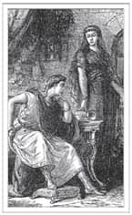

Et Kokarsa Tuzlarsın, Ya Tuz Kokarsa?
Birçok imparator duyarlılıkla hüküm sürmüştür, ancak yüksek statüleri kimisinin kendini tamamen kaybetmesine, hatta çoğunlukla delirmesine yol açmıştır.
Tiberius’un Golyan Balıkları
Büyük Plinius tarafından ‘insanların en hüzünlüsü’ olarak tanımlanan İmparator Tiberius, doğası gereği karanlık ve münzevi bir adamdı. Sevdiği kadın Vipsania’dan boşanmaya ikna edilen Tiberius, istemeden Augustus’un azgın ve çıkarcı kızı Julia’yla evlendirilmiştir.
Tiberius diğer Roma generalleri gibi sessizce kendi köşesine çekilse büyük ihtimalle daha mutlu olurdu. Ancak bunun yerine gücünün esiri oluyor ve giderek zavallılaşıyordu. Oğlunun ölümü ona son darbeyi vurmuş, hayatının geri kalanını ise yarı-emeklilik halinde Kapri Adası’nda sürdürmüştür.
Burada, kendisiyle birlikte su altında yüzerken cinsel organını balıklar gibi emen ve Golyan Balıkları adını verdiği bir grup genç oğlanı vardı. İmparatorluğun dört bir yanından getirilen kadın ve erkek köleler nimfalar ve satirler gibi giydirilir, Tiberius’u istediği her şekilde tatmin etmeleri için mağaralar ve ormandaki açık alanlara bırakılırdı. Tiberius’un üçlü seks ve pornografiye olan düşkünlüğü ve azgın gözlerine gözü değen herkesin onunla sevişmek istediğini düşünmesi Suetonius tarafından kaleme alınmıştır.
Hüküm sürdüğü dönem boyunca Tiberius imparatorluğu güçlendirmiş, devraldığından daha güçlü ve varlıklı bir hale getirmiştir. Tarih ise maalesef onun daha çok kişisel hayatının olumsuz yanlarına ve sapkın tercihlerine odaklanmıştır.
Tacitus, Tiberius’un ölüm haberinin kalabalık gruplarca kutlandığını yazmıştır. M.S. 37 yılında, yetmiş yedi yaşında, büyük ihtimalle doğal sebeplerden ölmüş olsa da, varisi Caligula ile Praetoria Muhafızlarının lideri Macro tarafından boğulduğu yönünde söylentiler de vardır.
Kaçık Bir Zorba
Tiberius’tan sonra tahtı yeğeni ve evlat edinilmiş torunu Caligula devralmıştır. Caligula kendi halinde hüküm sürmeye başlamış olsa da bir noktadan sonra bütün ılımlılık ve ahlak anlayışını kaybetmiş ve cani bir zorba haline gelmiştir.
Caligula hakkında elimize ulaşan nadir kaynaklardan biri de Suetonius’un, abartılı hikayeler anlattığı On İki Sezar’ıdır. Ancak Caligula’nın Tiberus’un zenginliğini çarçur ettiği ve imparator olarak sınır tanımaksızın güç gösterilerinde bulunduğu aşikardır. Hiçbir iyi özelliği olmadığı gibi fiziksel olarak da hiç çekici değildir. Seneca onu uzun, soluk tenli ve ince, çukur gözlü, zayıf çeneli, giderek kelleşen, kıllı bir adam olarak tasvir etmiştir. Onu birdenbire bilinçsiz bırakan bir hastalıktan muzdariptir; bir de uyuduğunda tuhaf sanrılar gördüren bir uykusuzluk hastalığı çekmektedir.
Caligula’nın deliliği birçok farklı hikayede anlatılır. En sevdiği at olan Incitatus’u Senato’da üye olarak oturtmaya çalışmış, sokaktaki büstleri kendi büstüyle değiştirtmiş, İngiltere’ye sefere gitmeyi planlarken –hatta birliklerine orada deniz kabuğu toplamayı emredecek kadar inanmıştır bu fikre– Manş Denizi’nden öteye geçememiştir. Herkesin kaderini belirleyen vahşi bir despot olarak namını kanıtlarcasına kölelere işkence etmiş, rastgele ölüm fermanları vermiş (özellikle de kel kafasına bakan herhangi birine) ve de mahkumlar yeterli gelmeyince seyircileri aslanlara yem etmiştir. Suetonius’a göre, Caligula üç kız kardeşiyle düzenli olarak ensest ilişkiye girmiş, hatta eski bir konsül ile evli olan Drusilla adındaki kız kardeşiyle ayan beyan, sanki karısıymış gibi yaşamıştır. Drusilla’nın ölümü onu öyle bir hüzne boğmuştur ki genel yas döneminde hamama gitmek ya da aileyle yemek yemek de dahil olmak üzere herhangi bir mutluluk belirtisininin ölüm cezası sebebi olduğunu ilan etmiştir. Sonraları halk önünde ant içerken kız kardeşinin tanrısallığı üzerine yemin etmiştir.
Biseksüelliğini açık açık yaşayan Caligula’nın yemek davetlerinde davetlilerinin karılarını incelemek ve içlerinden istediği birini seçerek cinsel performanslarını ölçmek gibi bir eğlencesi vardı. Yirmi dokuz yaşında, henüz tahttaki dördüncü senesini doldurmadan arkadaşları tarafından öldürülmesi belki de şaşırtıcı değildir.
Caligula’nın, Julio-Claudian hanedanının5 M.S. 68 yılında devrilmesine doğru giden süreci başlatan imparator olduğu rivayet edilir.
Roma Yanarken
Nero, Julio-Claudian hanedanının son imparatoruydu ve zorbalığa Caligula’nın bıraktığı yerden devam ediyordu. Cani bir hükümdar olan Nero, annesi Agrippina ve üvey kardeşi Britannicus dahil sayısızca idam ve zehirlemeden bizzat sorumludur. On dört yıl hüküm sürmüştü ve Roma’nın çoğu M.S. 64’te yanıp kül olduğunda imparatorluğunu sürdürüyordu. Birçok Romalı Nero’nun büyük sarayına yer açabilmek için yangını kendisinin başlattığını düşünüyordu. Şehir yanarken keman çalıp ‘Truva’nın Düşüşü’ şarkısını söylediği günümüze kadar gelmiş bir söylenti olsa da büyük ihtimalle doğru değildir.
Atalarının birçoğu gibi, Nero’nun da sapkın cinsel arzuları olduğu söylenir. Suetonius onu vahşi hayvan postları giyip, kazığa bağlanmış mahkumların cinsel organlarını tırmalayan bir adam olarak betimlemiştir. Ayrıca Nero’nun annesiyle ilgili bir takıntısı olduğunu da söylemiştir. En tuhafıysa Nero’nun M.S. 67 yılında Sporus isimli azad edilmiş, hadım ettirdiği bir köleyle evlenmiş olmasıdır. Sporus, Nero’nun iki yıl önce ölmüş olan karısı Poppaea Sabina’ya çok benzemektedir. Nero, karısının ölümünden öylesine etkilenmiştir ki, ölüsünün yakılmasına izin vermemiştir. Bunun yerine vücudunu mumyalatmış ve Augustus Türbesi’ne kaldırtmıştır.
Nero M.S. 68 yılında, Senato’nun onu öldürmek için asker gönderdiğini anlayınca intihar etmiştir.

Nero ve Agrippina
5 Julio-Claudian hanedanı, ilk beş Roma imparatoru Augustus, Tiberius, Caligula, Claudius ve Nero için kullanılan bir ifadedir. (e.n.)